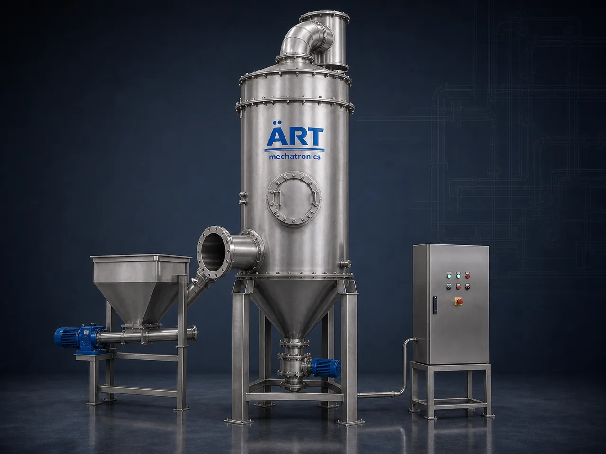

Dry Scrubber System (Dry Sorbent Air Pollution Control Equipment)
A Dry Scrubber is an air pollution control system that treats acid gases, fumes and odours in an industrial exhaust stream using a dry or semi-dry reagent instead of a circulating liquid.

About the Dry Scrubber
Because it needs no scrubbing water and produces no liquid effluent, a dry scrubber is chosen where wastewater handling is difficult, where the exhaust has to stay dry, or where the collected residue is easier to manage in solid form. It is the dry counterpart to the wet scrubber, and ART Mechatronics engineers both so that the right method is matched to the gas stream, the plant layout and the applicable emission norms.
One machine, many names
Buyers search for this equipment under many terms — we manufacture all of them:
Working Principle of Dry Scrubber
Process exhaust carrying acid gases, fumes or odour enters the system through:
A dry or semi-dry reagent is metered into the gas stream by:
Reagent is selected to suit the gas being treated
Sorbent and pollutants mix and react while travelling through:
Gaseous pollutants are converted into dry solid reaction products
Reacted sorbent and dust are separated from the gas stream by:
Separated solids are discharged into:
Residue is handled dry, so no scrubbing effluent is generated
Treated gas is drawn out and released to atmosphere through:
Supports pollution control compliance
Types of Dry Scrubbers
Industries Using Dry Scrubbers
⚗️ Chemical & Process Industry
- Acid gas streams
- Process vent and fume lines
💊 Pharmaceutical & Nutraceutical
- Solvent and reaction fumes
- Powder handling exhausts
🏭 Steel, Metal & Foundry
- Furnace and cupola off-gas
- Heat treatment fumes
🏗️ Cement, Minerals & Construction Materials
- Kiln and dryer exhaust
- Material handling vents
♻️ Waste, Recycling & Thermal Plants
- Incinerator and thermal oxidiser exhaust
- Waste processing vents
🍃 Food & Agro Processing
- Roasting and frying fume lines
- Dryer exhaust carrying odour
Features & Advantages
- Dry operation with no scrubbing water circuit
- No liquid effluent to treat or discharge
- Residue collected in dry, solid form
- Suitable for acid gas, fume and odour control
- Can be combined with dust filtration in a single package
- Construction options selected for the gas being handled
- Layout customised to the existing plant
Technical Highlights
- Gas Volume: Custom engineered to the application
- Sorbent Type: Selected to suit the gas being treated
- Separation Stage: Bag filter or cartridge filter module
- Construction: Mild steel or stainless steel construction options
- Residue Handling: Dry discharge through hopper and airlock
- Automation: PLC-based control (optional)
Turnkey Dry Scrubber Solutions
ART Mechatronics offers:
- Application study and system design
- Sorbent storage, metering and injection arrangement
- Ducting and exhaust system integration
- Equipment manufacturing
- Installation & commissioning
- After-sales service & AMC
Why Choose ART Mechatronics
- Experience in both wet and dry emission control
- Systems matched to the actual gas stream and duty
- Designs that suit existing plant layouts
- Robust industrial construction
- Single point of responsibility from design to commissioning
Applications
- Chemical Processing Plants
- Pharmaceutical Manufacturing Units
- Foundry & Metal Processing Plants
- Cement & Mineral Plants
- Waste & Thermal Treatment Plants
- Food & Agro Processing Units
Get pricing & specs for the Dry Scrubber
Share the product, target capacity, current process and plant location. These details help our engineers discuss the right machine or line configuration.
One partner, from design to start-up
ART Mechatronics designs, manufactures, installs and commissions your Dry Scrubber solution with regional presence in India, UAE and Thailand.